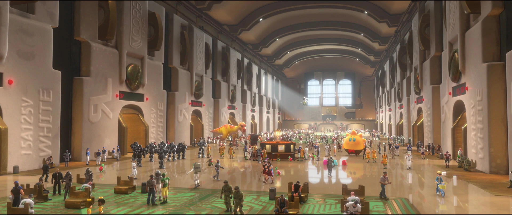
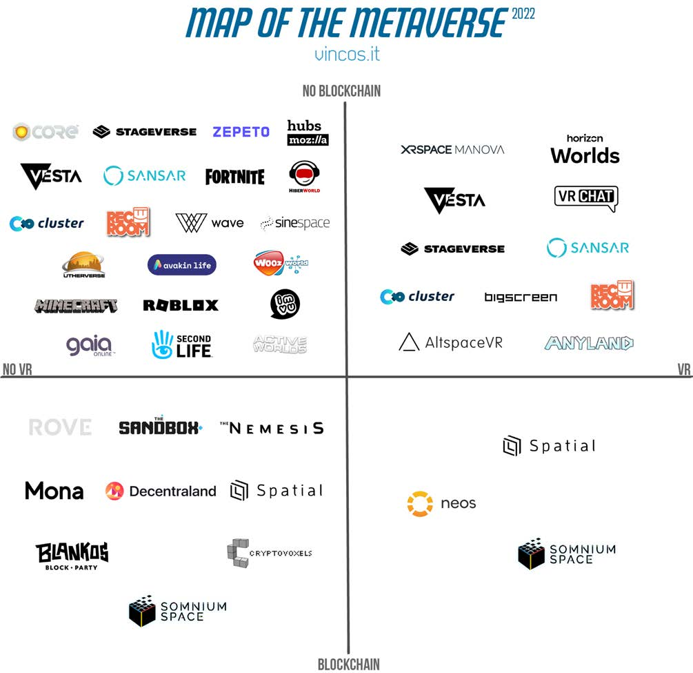
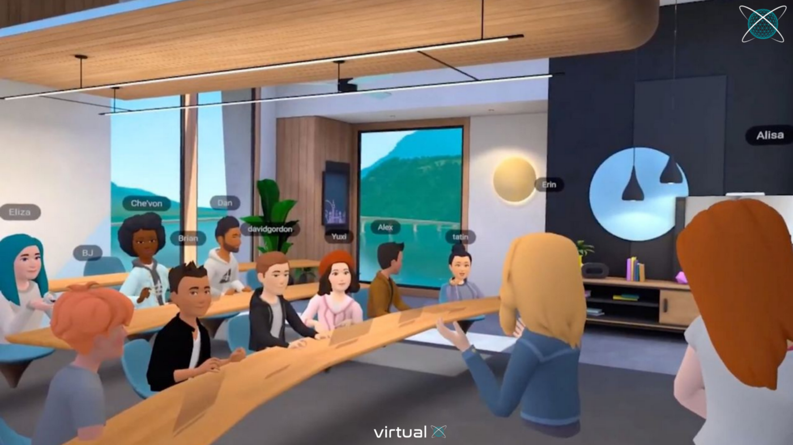
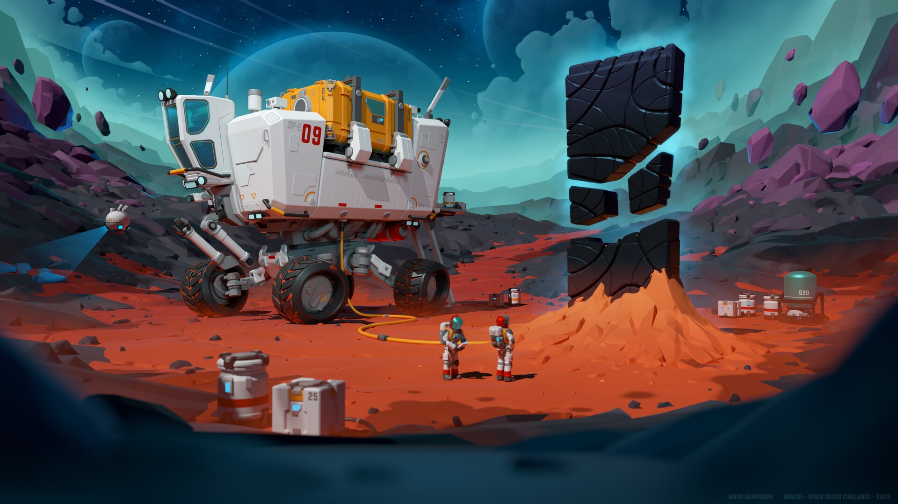

Comment favoriser l'adoption du Métaverse ?
Par Quentin Chaignaud, présenté le 7 septembre 2022 à l'université d'Evry-Val-d'Essonne.
Présentation de la mission
- création de scripts de compression/décompression
- développement des besoins métiers sur Linkurious
- transformation de la RADLAD en API
Introduction
Métaverse = Internet ∩ Réalité Virtuelle
Introduction
Le Métaverse n'est pas :
- une platerforme de contenu
- un jeu vidéo
- un monde virtuel (pas que)

Pourquoi est-il important de s'intéresser au Métaverse ?
Quelques proto-metaverses existants
- Roblox
- Decentraland
- Metaverse Standard Forum
Quelques proto-metaverses

Quelques exemples - la recherche
Quelques exemples - l'éducation

Quelques exemples - la santé
Outils et structures nécessaires
Besoin croissant de puissance et de vitesse.
L'IA est au coeur du processus.
Outils et structures nécessaires
La question de la sécurité
- confidentialité des données
- gouvernance des données
- risques physiques
- risques psychiques
Convaincre en attirant des communautés
L'économie des créateurs est une des clés de l'adoption du Métaverse.
La gamification pour plus de rétention
Comment donner un sens à l'utilisateur dans son exploration ?
Le besoin d'esthétisme
Le Métaverse dans la fiction VS dans la réalité :
